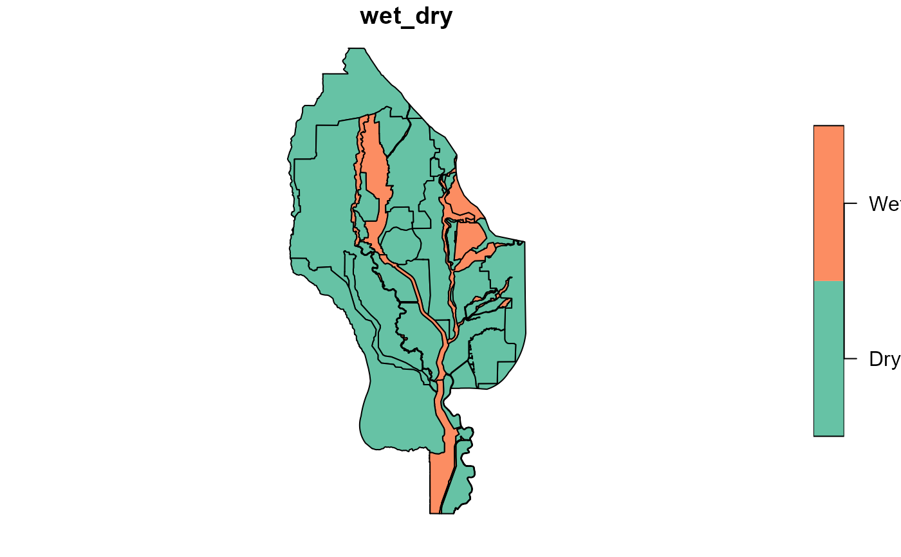

wetdry.RdThis sf dataset contains polygons identifying which parts of the Sacramento Valley are behind levees ("dry") or directly exposed to rivers or floodways ("wet")
wetdryAn object of class sf (inherits from tbl_df, tbl, data.frame) with 125 rows and 2 columns.
compiled from data from Ducks Unlimited and others
wet_dry = identifier of the enclosed area as "wet" or "dry"
head(wetdry)
#> Simple feature collection with 6 features and 1 field
#> Geometry type: POLYGON
#> Dimension: XYZ
#> Bounding box: xmin: 6474596 ymin: 2028968 xmax: 6766993 ymax: 2447911
#> z_range: zmin: 1.136868e-13 zmax: 6.82121e-13
#> Projected CRS: NAD83(2011) / California zone 2 (ftUS)
#> # A tibble: 6 × 2
#> wet_dry geometry
#> <chr> <POLYGON [US_survey_foot]>
#> 1 Dry Z ((6623854 2379216 6.82121e-13, 6623853 2379008 6.796191e-13, 662383…
#> 2 Dry Z ((6735708 2143171 4.547474e-13, 6735731 2143223 4.547474e-13, 67357…
#> 3 Dry Z ((6645812 2284995 1.136868e-13, 6645847 2285050 1.136868e-13, 66493…
#> 4 Dry Z ((6674774 2180693 1.136868e-13, 6674794 2180737 1.136868e-13, 66747…
#> 5 Dry Z ((6482270 2236010 1.136868e-13, 6482264 2236056 1.136868e-13, 64822…
#> 6 Dry Z ((6626920 2234118 1.136868e-13, 6626914 2234118 1.136868e-13, 66269…
plot(wetdry)
